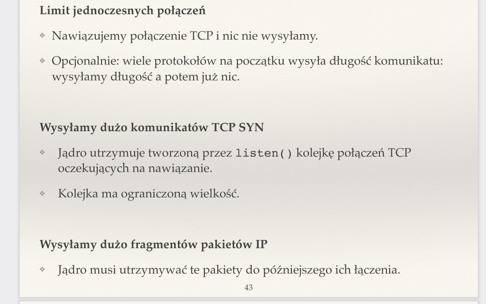
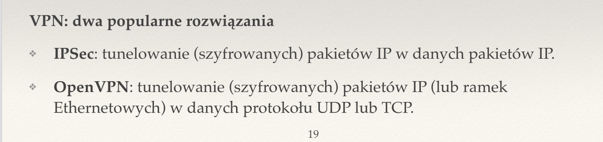

Created Sunday 26 June 2022
Zagadnienia
❖ Co to jest pamięć CAM i jak stosuje się ją w przełącznikach? Jak można ją przepełnić?
CAM to rodzaj pamięci, adresowanej po zawartości (sprzętowa tablica haszująca — content addresable memory). W przełączanym Ethernecie jeśli często będziemy zmieniać adres MAC, możemy zalać CAM nowymi wpisami, a przełącznik (switch) przejdzie w tryb uczenia się.
❖ Opisz atak typu ARP spoofing.
Wysyłamy odpowiedź ARP na niezadane pytanie, jako aders IP ustawiając IP uzytkownika, którego chcemy podsłuchać. Pakiety zostają przekierowywane do nas.
❖ Co oznacza termin IP spoofing? Na czym polega metoda weryfikacji tak zmodyfikowanych pakietów (ingress filtering)?
Fałszujemy źródłowy adres IP (można go sobie ustawić samodzielnie). Mozemy w ten sposób uniknąć odpowiedzialności za atak lub uzyskiwać dostęp do niektórych usług.
Ingress filtering to metoda radzenia sobie z takimi atakami, skuteczna, jeśli router jest blisko nadawcy. Router zakłada, że pakiet musi mieć adres źróðłowy z określonego zakresu. Nie przepuszcza ruchu o adressach IP, które wydają się podejrzane.
❖ Na czym polega atak RIP spoofing?
RIPv1 nie jest uwierzytelniany. Wystarczy rozgłaszać trasę do siebie o małym koszcie, a wtedy cała sieć zacznie przekierowywać ruch do odbiorców przez nas.
❖ Na czym polega zatruwanie pamięci podręcznej serwera DNS?
- Atakujący wysyła do R zapytanie o amazon.com.
- R wysyła zapytanie (przez UDP) o amazon.com do serwera DNS (o adresie IP=X).
- Atakujący wysyła odpowiedzi DNS (datagramy UDP) podszywając się pod X.
- R sprawdza, czy w odpowiedzi jest taki sam 16-bitowy ID jak w zapytaniu
- Wystarczy, że atakujący wyśle 2^16 odpowiedzi ze wszystkimi możliwymi ID.
Można temu zapobiec za pomocą DNSSEC (kryptograficzne uwierzytelnianie pakietów DNS) — stosowane przez główne serwery DNS. Obecnie ataku na DNS nie są tak skuteczne — uwierzytelnianie punktów końcowych połączenia (TLS).
❖ Jak wygląda uwierzytelnianie serwera SSH?
- Przy pierwszym połączeniu serwer przesyła klucz publiczny, a program klienta oblicza dla niego funkcję skrótu.
- Użytkownik potwierdza ten fingerprint (albo i nie, bo komu by się chciało dzwonić do administratora).
- Po zaakceptowaniu klucz publiczny jest zapisywany lokalnie w liście znanych hostów.
❖ Na czym polega uwierzytelnianie użytkownika przez SSH z wykorzystaniem kluczy RSA?
- Klient może po prostu podać hasło do konta albo
- klient podaje wiadomość, że jest takim użytkownikiem, za jakiego się podaje
- serwer prosi go, by podpisał jakieś dane
- klient podpisuje dane i odsyła
- serwer sprawdza, czy to faktycznie użytkownik (zna jego klucz publiczny, bo użytkownik wcześniej zapisał go w pliku authorized_keys na serwerze. Jest to lepsze niż hasło, bo nie działa atak powtórzeniowy (ktoś może podsłuchać naszą komunikację i ją powtórzyć).
❖ Przedstaw przykładowe ataki wykorzystujące brak sprawdzania poprawności wprowadzanych danych.
- przepełnienie bufora — nadpisujemy na stosie adres powrotu procedury na adres złośliwego kodu i zapisujemy wyżej ten kod
- atak typu ../ — możemy poprosić w pomocniczym skrypcie WWW o wrażliwy plik z serwera, np.http://example.com/skrypt?plik=test wyświetla zawartość pliku /var/www/test.
- SQL injection
❖ Wyjaśnij pojęcia: robak internetowy, exploit, botnet.
Robak internetowy — programy komputerowe, które wykorzystują znalezione luki w bezpieczeństwie niektórych usług.
Exploit — gotowe sposoby wykorzystania luk w zabezpieczeniach lub implementacji , do znalezienia na specjalistycznych stronach internetowych, np. CIRCL, VulDB, Security Focus. Często uzywane przez niedoświadczonych użyszkodników. Często wystarczy drobna zmiana, np. podmiana numeru portu, na którym nasłuchuje SSH, żeby taki program przestał działać (security by obscurity).
Botnet — sieć komputerów, zainfekowanych przez robaka internetowego. Pozwala na rozproszony atak.
❖ Na czym polega phishing?
Phishing — podszywanie się pod zaufaną stronę, np. Facebook, bank, Netflix, by uzyskać dostęp do danych użytkownika.
❖ Co to jest skanowanie portów? Po co się je wykonuje?
Skanowanie portów to wyszukiwanie otwartych portów. Często wykonywane przed atakiem, by sprawdzić, jakie usługi działają na maszynie. Polega na używaniu specjalnych programów, np. nmap, lub wysyłaniu komunikatów z dziwnymi flagami, np. RST+ACK, skanowanie za pomocą SYN, itp.
❖ Co to są ataki DoS i DDoS?
DoS i DDoS to ataki polegające na odmowie dostępu do usług, np. w celu wymuszenia okupu lub z chęci zemsty. Mogą polegać na zakłócaniu fizycznego kanału, np. sieci bezprzewodowej, wyczerpywaniu mocy obliczeniowej, zalewaniu łącza pakietami, np. ICMP ECHO. Czasami stosuje się Reflected DoS, gdzie sami nie jesteśmy w stanie zalać ofiary pakietami (mamy za wolny komputer), ale wysyłamy, np. zapytania DNS, z adresem źródłowym ofiary. Wtedy mocniejszy komputer (serwer DNS) zalewa ofiarę znacznie większymi pakietami, niż te wysłane przez nas. Czasami spotyka się też smurf attack, w któ©ym wykorzystujemy ICMP ECHO (ping), by wysłáć jeden pakiet do switcha, ale na adres broadcast. Switch zwielokratnia nasz pakiet i rozsyła po całej sieci. Każdy odbiorca odpowiada ofierze.
DDoS to Distributed Denial of Service, czyli rozproszony DoS. Jest wykonywany z wielu komputerów, które np. zostały wcześniej zainfekowane robakiem, tworząc botnet.

❖ Na czym polega atak typu odbity (reflected) DoS?
Reflected DoS — sami nie jesteśmy w stanie zalać ofiary pakietami (mamy za wolny komputer), ale wysyłamy, np. zapytania DNS, z adresem źródłowym ofiary. Wtedy mocniejszy komputer (serwer DNS) zalewa ofiarę znacznie większymi pakietami, niż te wysłane przez nas.
❖ Jak działa i do czego jest wykorzystywany ICMP Traceback?
Każdy router dla przesyłanego pakietu z małym prawdopodobieństwem (ok. 1/20000) wysyła do odbiorcy dodatkowy komunikat ICMP. Zawiera on informacje o pakiecie, routerze, itd. Pomaga zidentyfikować podejrzany ruch sieciowy, w przypadku ataku.
❖ Podaj przykłady tunelowania.
Tunelowanie to przesyłanie usług sieciowych za pomocą innych usług sieciowych, łamiąc standardowy model warstwowy. Pozwala nam to zestawić wirtualne połączenie (często szyfrowane).
Przykładem jest tunelowanie pakietóœ IPv6 w pakietach IPv4 lub VPN.

❖ Rozwiń skrót VPN. Do czego służy?
VPN (Virtual Private Network) — dwie sieci są połączone internetem, ale chcemy z nich zrobić jedną sieć logiczną, np. zdalnie pracujący pracownicy firmy chcą działać w obrębie zaufanej sieci firmowej.
❖ Porównaj wady i zalety filtrów pakietów: prostych, stanowych i działających w warstwie aplikacji.
Filtry proste — warstwa sieciowa. Analizują tylko IP i porty. Szybkie, ale mało precyzyjne.
Stanowe — warstwa transportowa. Analizują nagłówki IP i TCP. Śledzą nawiązywanie połączenia TCP, pamiętają jego stan.
Filtry działające w wastwie aplikacji — analizują zawartość segmentów i datagramów. Rozumieją, że trzeba otworzyć port na dane. Nie należy ich mylić z zaporwami aplikacji, które analizują wywyołania systemowe aplikacji (syscalle). Znacznie wolniejsze niż poprzednie.
❖ Do czego służą moduły input, output, forward w filtrze Netfilter / nftables?
Input — konfiguruje zachowanie dla pakietów przychodzących, np. są wpuszczane lub odrzucane..
Output — konfiguruje zachowanie dla pakietów wychodzących.
Forward — konfiguruje pakiety, które tylko przechodzą przez nasz router.
nat PREROUTING — podmiana docelowych adresów IP, np. przy przekierowywaniu do innego komputera.
nat POSTROUTING — podmiana źróðłowych adresów IP. Ostatnia czynność przed wysłaniem pakietu.
❖ W jakich łańcuchach zapory Linuksa wykonywany jest źródłowy a w jakich docelowy NAT?
Źródłowy w postrouting.
Docelowy w prerouting.
{kind=link}
{kind=link}
{kind=link}
{kind=link}
{kind=link}
{kind=link}
{kind=link}
{kind=link}
{kind=link}
{kind=link}
{kind=link}